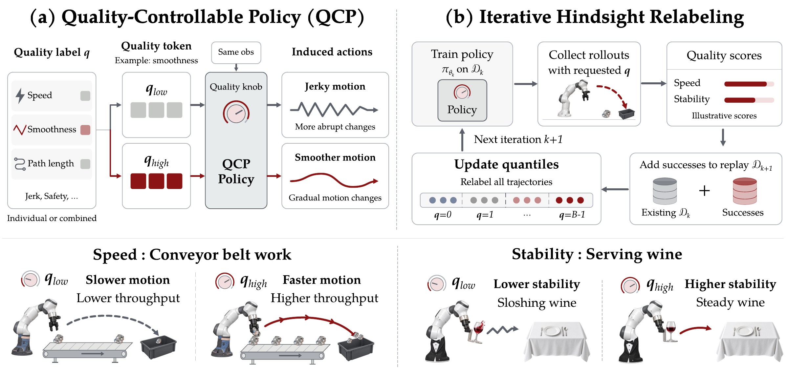

Completion speed
How many steps, or how much time, the robot needs to finish.
Steps / completion time ↓Video supplementary material
with Iterative Hindsight Relabeling
Success is only the beginning. QCP lets a robot control how it performs a task—moving faster, carrying more steadily, and executing with better quality.
Explore the comparisons01 / Watch the difference
Compare Base and QCP vertically.
Scroll sideways to explore each quality.
02 / Beyond a success flag
Different tasks call for different qualities.
QCP makes the desired behavior an input.
14 quality axes · 18 benchmark-specific definitions
How many steps, or how much time, the robot needs to finish.
Steps / completion time ↓How quickly the robot’s hand moves along its trajectory.
Mean EEF speed ↑How gently successive arm commands change.
Normalized action jerk ↓How consistently the hand’s displacement changes along its path.
Normalized EEF jerk ↓How smoothly joint motion changes over time.
Mean joint jerk ↓ · rad/s³How smoothly the wrist moves through physical space.
Mean Cartesian jerk ↓ · m/s³How much total motion the robot’s joints travel.
Accumulated joint travel ↓ · radHow far the robot’s hand travels through space.
Translation / Cartesian path ↓ · mHow much the robot’s hand rotates during execution.
Rotation / orientation path ↓ · radWhen the gripper first begins to close within the motion.
Relative grasp timing ↓The vertical range covered by the robot’s hand.
Vertical range ↕ · mHow closely the two arms’ joint speeds match.
Bimanual velocity difference ↓How closely the two hands stay at the same height.
Bimanual height difference ↓How close a carried tray stays to level.
Mean tilt angle ↓ · radAll quality definitions used in our evaluations are represented here. Related speed and path measures share a card; normalized smoothness proxies and physical jerk remain separate. Arrows indicate the primary preference; completion speed and lift amplitude can be controlled in both directions. Task success and conveyor throughput are reported separately as outcome measures.
03 / The key idea
QCP conditions a robot policy on discrete quality levels. At test time, a target level specifies the execution behavior we want.
Iterative hindsight relabeling collects successful rollouts, measures the quality they actually achieve, and relabels the accumulated data before training again. As better executions enter the dataset, the controllable quality range can extend beyond the initial demonstrations.
